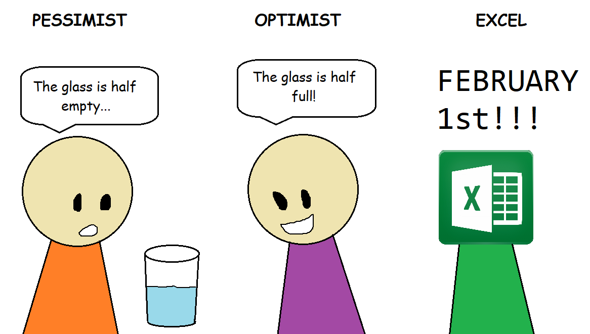

Before we start
Main Concepts
Workbook
A workbook is the main file in Excel that contains one or more worksheets. When you open Excel, you’re working with a workbook, typically saved with an .xlsx extension. Think of a workbook as a binder that holds multiple pages (worksheets) of data.
Official documentation: Basic tasks in Excel
Cells and Cell References
A cell is the basic unit of a worksheet, defined by the intersection of a column and a row (e.g., A1, B5). Cells can contain text, numbers, or formulas.
Official documentation: - Cell basics - Create or change a cell reference - CELL function
Rows and Columns
Rows run horizontally (numbered 1, 2, 3…), columns vertically (labeled A, B, C…). The intersection point is a cell.
Official documentation: Refer to Rows and Columns
Copy and Paste (Ctrl+C and Ctrl+V)
Ctrl+C copies selected content; Ctrl+V pastes it. Works across Excel and most software.
Official documentation: Keyboard shortcuts in Excel
Hyperlinks
Hyperlinks are links in cells that point to websites, files, or workbook locations. Remove them by right-clicking → “Remove Hyperlink”.
Official documentation: Remove or turn off hyperlinks
AutoFill and Series
AutoFill extends data series (like numbers, dates) by dragging the fill handle (corner of a cell). Excel recognizes patterns and continues sequences.
Official documentation: Fill data automatically in worksheet cells
Format Painter
Copies formatting from one cell/range and applies to another. Single-click for one use; double-click to keep active for multiple uses.
Official documentation: Use Format Painter
Font Formatting (Bold, Font Size)
Font formatting changes text appearance. Ctrl+B makes text bold. Font size increases/decreases text size.
Official documentation: Format cells
Date Formatting
Excel stores dates as numbers, displaying them based on chosen format (Long Date, Short Date, Custom). Use Ctrl+1 to format.

Official documentation: - Format numbers as dates - Number format codes
Keyboard Shortcuts: Ctrl+S (Save)
Ctrl+S saves the workbook. If new, prompts for file name/location.
Official documentation: Save your workbook
Paste Special
Paste Special gives advanced paste options: values only, formulas, formats, and more. Access via Ctrl+Alt+V or right-click.
Official documentation: - Paste Special - Paste options
SUM Function
Adds a range of cells, e.g., =SUM(A1:A10). Can also sum multiple separate cells or ranges.
Official documentation: SUM function
AutoSum
AutoSum (Σ) quickly inserts SUM (and other functions) into a selected cell, automatically detecting the range. Shortcut: Alt+=
Official documentation: Use AutoSum to sum numbers
Worksheets (Tabs)
A sheet is a single page in a workbook. Tabs at the bottom of Excel let you organize/use multiple sheets in one file.
Official documentation: - Select worksheets - Insert or delete a worksheet
Relative Cell References
Relative references (e.g., A1) shift automatically when formulas are copied to new locations.
Official documentation: Switch between relative, absolute, and mixed references
Absolute Cell References
Absolute references (e.g., $A$1) stay fixed when formulas are copied. Add $ before letter or number as needed.
Official documentation: Switch between relative, absolute, and mixed references
Formula Bar
The bar above the worksheet shows/edit cell content or formulas, even if the cell displays a result.
Official documentation: Overview of formulas in Excel
AVERAGE Function
Calculates the arithmetic mean of specified numbers/range.
Official documentation: AVERAGE function
Borders
Add lines around cells to improve visual organization (no effect on calculations).
Official documentation: Apply or remove cell borders
Percentage Formatting
Displays values as percentages by multiplying by 100 and adding %. Use % button on the ribbon.
Official documentation: Format numbers as percentages
File Management
Organize files in folders, use clear names, move from Downloads, and save frequently.
Official documentation: Save your workbook
Conditional Formatting
Apply color, icons, or data bars to cells automatically based on rules (e.g., highlight values >100).
Official documentation: Use conditional formatting
Highlight Cells Rules
Conditional formatting presets to highlight cells >, <, =, text contains, or duplicates.
Official documentation: Use conditional formatting
Manage/Edit/Clear Rules
Conditional formatting rules can be managed, edited, or cleared using the Rules Manager.
Official documentation: Manage rule precedence
Data Bars
Visually represent values using horizontal bars inside cells—a quick way to compare values.
Official documentation: Use data bars
Top/Bottom Rules
Highlight top/bottom items, top/bottom %, above/below average.
Official documentation: Use conditional formatting
Duplicate Values
Highlight repeated values within a range—useful for identifying data entry errors or duplicates.
Official documentation: Use conditional formatting
Find and Replace
Locate and replace text or values across cells/workbook. Shortcut: Ctrl+H.
Official documentation: Find or replace text and numbers
Visual Data Analysis
Use formatting, colors, and graphics to make data patterns and trends visible for quick insights.
Official documentation: Use conditional formatting
Images and GIFs Disclaimer: Some of the images and GIFs used on this website are not owned by me. They are used for educational and illustrative purposes only. All rights belong to their respective owners. If you believe any content violates copyright, please contact me for prompt removal.